स्कन्ध 10 · अध्याय 94
श्लोक १
राजोवाच—
देवासुरमनुष्येषु ये भजन्त्यशिवं शिवम् ।
प्रायस्ते धनिनो ब्रह्मन् न तु लक्ष्मीपतिं हरिम्।। १ ।।
देवासुरमनुष्येषु ये भजन्त्यशिवं शिवम् ।
प्रायस्ते धनिनो ब्रह्मन् न तु लक्ष्मीपतिं हरिम्।। १ ।।
भागवततात्पर्यनिर्णय
श्लोक २
एतद्् वेदितुमिच्छामि सन्देहोऽत्र महान् हि नः ।
विरुद्धशीलयोः प्रभ्वोर्विरुद्धां भजतोर्गतिम्।। २ ।।
विरुद्धशीलयोः प्रभ्वोर्विरुद्धां भजतोर्गतिम्।। २ ।।
श्लोक ३
श्रीशुक उवाच—
शिवः शक्तियुतः शश्वत् त्रिलिङ्गो गुणसंवृतः ।
वैकारिकस्तैजसश्च तामसश्चेत्यहं त्रिधा।। ३ ।।
शिवः शक्तियुतः शश्वत् त्रिलिङ्गो गुणसंवृतः ।
वैकारिकस्तैजसश्च तामसश्चेत्यहं त्रिधा।। ३ ।।
श्लोक ४
ततो विकारा अभवन् षोडशामीषु पञ्चसु ।
उपाधावन् विभूतीनां सर्वासामश्नुते फलम्।। ४ ।।
उपाधावन् विभूतीनां सर्वासामश्नुते फलम्।। ४ ।।
श्लोक ५
हरिस्तु निर्गुणः साक्षात् पुरुषः प्रकृतेः परः ।
स सर्वदृगुपद्रष्टा तं भजन् निर्गुणो भवेत्।। ५ ।।
स सर्वदृगुपद्रष्टा तं भजन् निर्गुणो भवेत्।। ५ ।।
भागवततात्पर्यनिर्णय
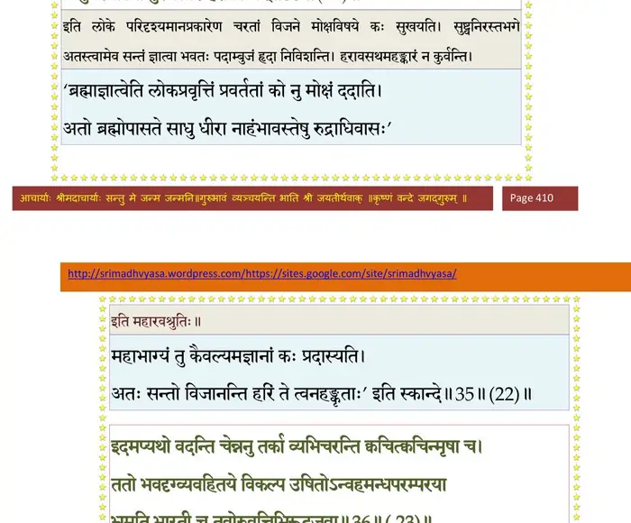
श्लोक ६
निवृत्तेष्वश्वमेधेषु राजा युष्मत्पितामहः ।
शृृण्वन् भगवतो धर्मानपृच्छदिदमच्युतम्।। ६ ।।
शृृण्वन् भगवतो धर्मानपृच्छदिदमच्युतम्।। ६ ।।
श्लोक ७
स चाह भगवांस्तस्मै प्रीतः शुश्रूषवे प्रभुः ।
नृणां निःश्रेयसार्थाय योऽवतीर्णो यदोः कुले।। ७ ।।
नृणां निःश्रेयसार्थाय योऽवतीर्णो यदोः कुले।। ७ ।।
भागवततात्पर्यनिर्णय
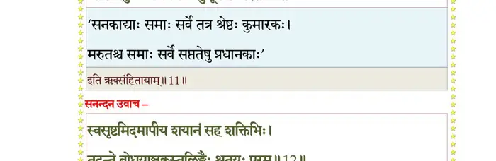
श्लोक ८
श्रीभगवानुवाच—
यस्याहमनुगृह्णामि हरिष्ये तद्धनं शनैः ।
ततोऽधनं त्यजन्त्यस्य स्वजना दुःखदुःखिनम्।। ८ ।।
यस्याहमनुगृह्णामि हरिष्ये तद्धनं शनैः ।
ततोऽधनं त्यजन्त्यस्य स्वजना दुःखदुःखिनम्।। ८ ।।
भागवततात्पर्यनिर्णय
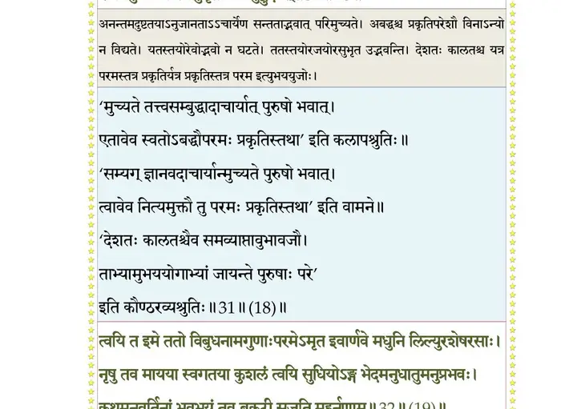
श्लोक ९
स यदा वितथोद्योगो निर्विण्णः स्याद् धनेहया ।
मत्परैः कृतमैत्रस्य करिष्ये तदनुग्रहम्।। ९ ।।
मत्परैः कृतमैत्रस्य करिष्ये तदनुग्रहम्।। ९ ।।
भागवततात्पर्यनिर्णय
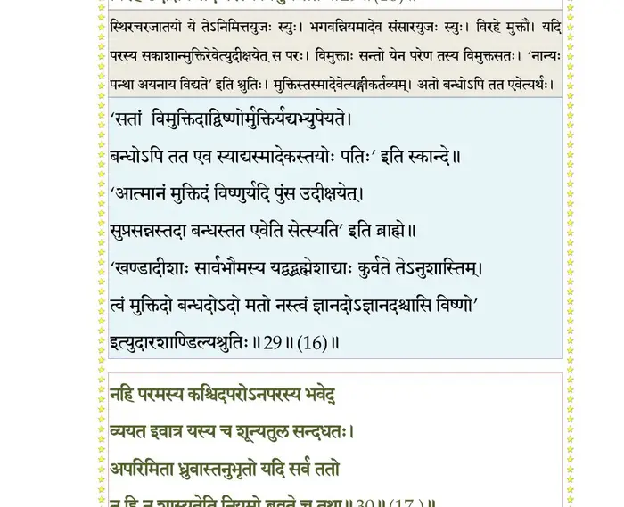
श्लोक १०
तद् ब्रह्म परमं सूक्ष्मं चिन्मात्रं सदनन्तकम् ।
अतो मां सुदुराराध्यं हित्वाऽन्यान् भजते पुनः।। १० ।।
अतो मां सुदुराराध्यं हित्वाऽन्यान् भजते पुनः।। १० ।।
भागवततात्पर्यनिर्णय
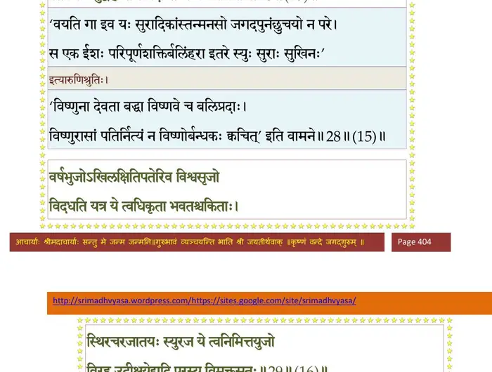
श्लोक ११
ततस्त आशुतोषेभ्यो लब्धराज्यश्रियोद्धताः ।
प्रमत्ता वरदान् देवान् विस्मरन्त्यवजानते।। ११ ।।
प्रमत्ता वरदान् देवान् विस्मरन्त्यवजानते।। ११ ।।
भागवततात्पर्यनिर्णय
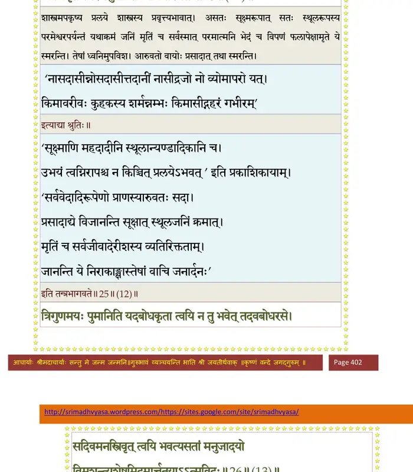
श्लोक १२
श्रीशुक उवाच—
शापप्रसादयोरीशा ब्रह्मविष्णुशिवादयः ।
सद्यः शापप्रसादोऽङ्ग शिवो ब्रह्मा च नाच्युतः।। १२ ।।
शापप्रसादयोरीशा ब्रह्मविष्णुशिवादयः ।
सद्यः शापप्रसादोऽङ्ग शिवो ब्रह्मा च नाच्युतः।। १२ ।।
श्लोक १३
अत्रैवोदाहरन्तीममितिहासं पुरातनम् ।
वृकासुराय गिरिशो वरं दत्वाऽऽप सङ्कटम्।। १३ ।।
वृकासुराय गिरिशो वरं दत्वाऽऽप सङ्कटम्।। १३ ।।
श्लोक १४
वृको नामासुरः पुत्रः शकुनेः पथि नारदम् ।
दृष्ट्वाऽऽशुतोषं पप्रच्छ देवेषु त्रिषु दुर्मतिः।। १४ ।।
दृष्ट्वाऽऽशुतोषं पप्रच्छ देवेषु त्रिषु दुर्मतिः।। १४ ।।
श्लोक १५
स आदिदेश गिरिशमुपाधावस्व सिद्धये ।
सोऽल्पाभ्यां गुणदोषाभ्यामाशु तुष्यति कुप्यति।। १५ ।।
सोऽल्पाभ्यां गुणदोषाभ्यामाशु तुष्यति कुप्यति।। १५ ।।
भागवततात्पर्यनिर्णय
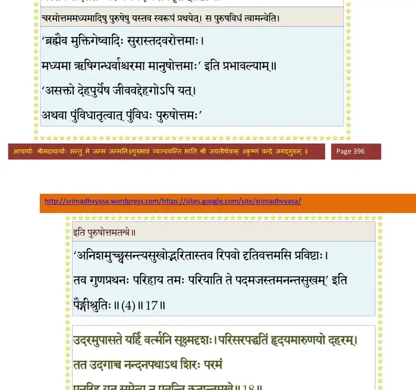
श्लोक १६
दशास्यबाणयोस्तुष्टः स्तुवतोर्बन्दिनोरिव ।
ऐश्वर्यमतुलं दत्त्वा तत आप सुसङ्कटम्।। १६ ।।
ऐश्वर्यमतुलं दत्त्वा तत आप सुसङ्कटम्।। १६ ।।
भागवततात्पर्यनिर्णय
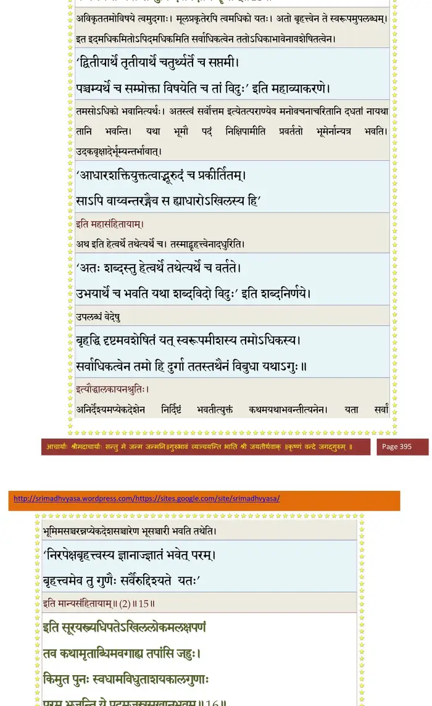
श्लोक १७
इत्यादिष्टस्तमसुर उपाधावत् सुयन्त्रितः ।
केदार आत्मक्रव्येण जुह्वन्नग्निमुखं हरम्।। १७ ।।
केदार आत्मक्रव्येण जुह्वन्नग्निमुखं हरम्।। १७ ।।
भागवततात्पर्यनिर्णय
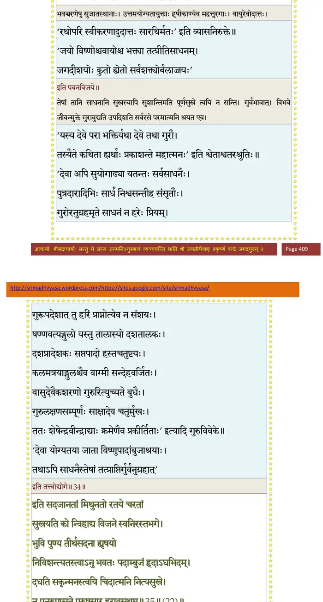
श्लोक १८
देवोपलब्धिमप्राप्य निर्वेदात् सप्तमेऽहनि ।
शिरो जिहीर्षुरसिना स तीर्थक्लिन्नमूर्धजः।। १८ ।।
शिरो जिहीर्षुरसिना स तीर्थक्लिन्नमूर्धजः।। १८ ।।
श्लोक १९
तदा महाकारुणिकः स धूर्जटिर्यथाऽवयव्यग्निरिवोत्थितोऽनलात् ।
निगृह्य दोर्भ्यां भुजयोर्न्यवारयत् तत्स्पर्शनाद् भूय उपाकृताकृतिः ।। १९ ।।
निगृह्य दोर्भ्यां भुजयोर्न्यवारयत् तत्स्पर्शनाद् भूय उपाकृताकृतिः ।। १९ ।।
श्लोक २०
तमाह चाङ्गालमलं वृणीष्व मे यथानिकामं वितरामि ते वरम् ।
शिवेन जीवेन नृणां प्रपद्यतामहो त्वयाऽऽत्मा भृशमर्द्यते वृथा।।२०।।
शिवेन जीवेन नृणां प्रपद्यतामहो त्वयाऽऽत्मा भृशमर्द्यते वृथा।।२०।।
भागवततात्पर्यनिर्णय
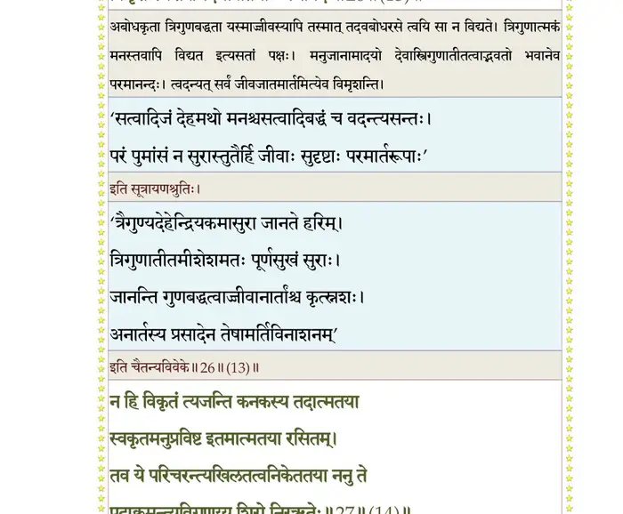
श्लोक २१
देवात् स वव्रे पापीयान् वरं भूतभयावहम् ।
यस्य पुंसः करं शीर्ष्णि धास्ये स म्रियतामिति।। २१ ।।
यस्य पुंसः करं शीर्ष्णि धास्ये स म्रियतामिति।। २१ ।।
श्लोक २२
तच्छ्रुत्वा भगवान् रुद्रो दुर्मना इव भारत ।
ओमिति प्रहसंस्तस्मै ददौ वरमृतं तथा।। २२ ।।
ओमिति प्रहसंस्तस्मै ददौ वरमृतं तथा।। २२ ।।
भागवततात्पर्यनिर्णय
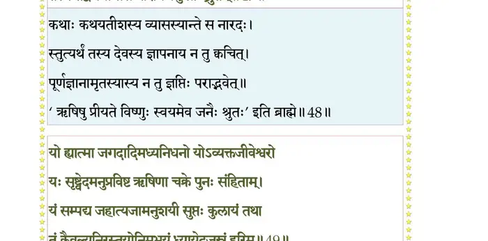
श्लोक २३
स तद्वरपरीक्षार्थं शम्भोः शीर्ष्णि वृकासुरः ।
स्वहस्तं दातुमारेभे सोऽबिभेत् स्वकृताच्छिवः।। २३ ।।
स्वहस्तं दातुमारेभे सोऽबिभेत् स्वकृताच्छिवः।। २३ ।।
भागवततात्पर्यनिर्णय
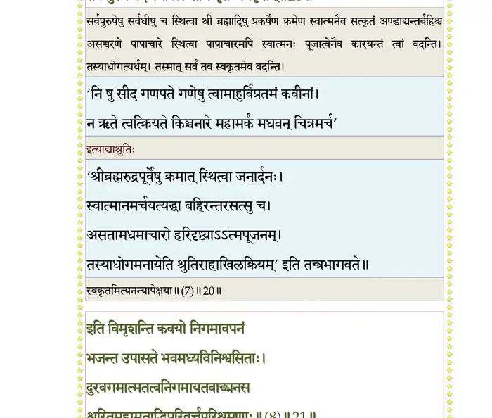
श्लोक २४
तेनोपसृष्टः सन्त्रस्तः पराधावत् सवेपथुः ।
यावदन्तं दिवो भूमेः कोष्ठानामधरं भुवः।। २४ ।।
यावदन्तं दिवो भूमेः कोष्ठानामधरं भुवः।। २४ ।।
श्लोक २५
अजानन्तः प्रतिविधिं तूष्णीमासन् सुरेश्वराः ।
ततो वैकुण्ठमगमद् भास्वरं तमसः परम्।। २५ ।।
ततो वैकुण्ठमगमद् भास्वरं तमसः परम्।। २५ ।।
भागवततात्पर्यनिर्णय
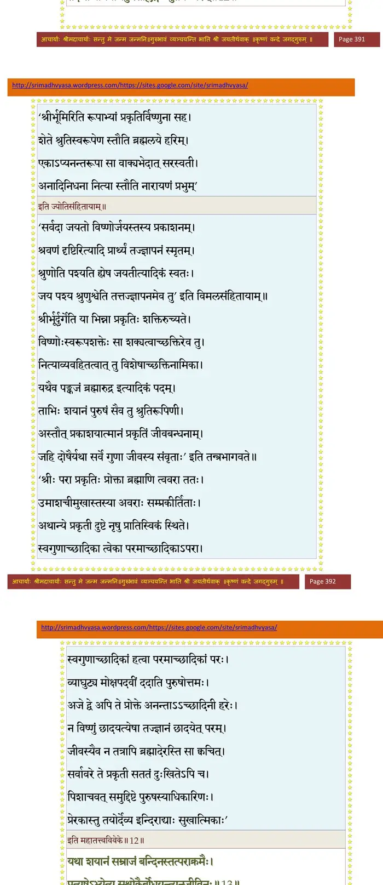
श्लोक २६
यत्र नारायणः साक्षान्न्यासिनां परमा गतिः ।
शान्तानां न्यस्तदण्डानां यतो नावर्तते गतः।। २६ ।।
शान्तानां न्यस्तदण्डानां यतो नावर्तते गतः।। २६ ।।
भागवततात्पर्यनिर्णय
श्लोक २७
तं तथाव्यसनं दृष्ट्वा भगवान् वृजिनार्दनः ।
दूरात् प्रत्युदितो भूप दारको योगमायया।। २७ ।।
दूरात् प्रत्युदितो भूप दारको योगमायया।। २७ ।।
भागवततात्पर्यनिर्णय
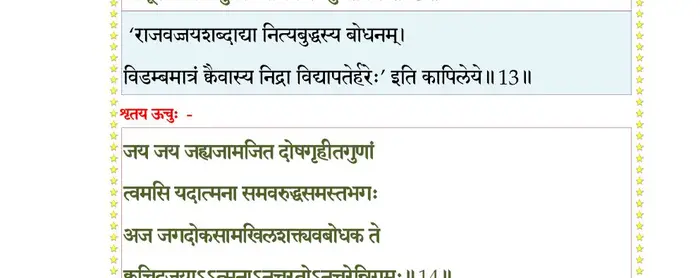
श्लोक २८
मेखलाजिनदण्डाद्यैस्तेजसाऽग्निरिव ज्वलन् ।
अभिवादयामास च तं कुशपाणिर्विनीतवत्।। २८ ।।
अभिवादयामास च तं कुशपाणिर्विनीतवत्।। २८ ।।
श्लोक २९
श्रीभगवानुवाच—
शाकुनेय भवान् व्यक्तं श्रान्तः किं दूरमागतः ।
क्षणं विश्रम्यतां पुंस आत्माऽयं सर्वकामधुक्।। २९ ।।
शाकुनेय भवान् व्यक्तं श्रान्तः किं दूरमागतः ।
क्षणं विश्रम्यतां पुंस आत्माऽयं सर्वकामधुक्।। २९ ।।
श्लोक ३०
यदि नः श्रवणायालं युष्मद्व्यवसितं विभो ।
भण्यतां पुरुषः साधो पुम्भिः स्वार्थः समीहते।। ३० ।।
भण्यतां पुरुषः साधो पुम्भिः स्वार्थः समीहते।। ३० ।।
श्लोक ३१
श्रीशुक उवाच—
एवं भगवता पृष्टो वचसाऽमृतवर्षिणा ।
गतक्लमोऽब्रवीत् तस्मै यथापूर्वमनुष्ठितम् ।। ३१ ।।
एवं भगवता पृष्टो वचसाऽमृतवर्षिणा ।
गतक्लमोऽब्रवीत् तस्मै यथापूर्वमनुष्ठितम् ।। ३१ ।।
श्लोक ३२
श्रीभगवानुवाच—
एवं चेत् तर्हि तद्वाक्यं वयं न श्रद्दधीमहि ।
यो दक्षशापात् पैशाच्यं प्राप्तः प्रेतपिशाचराट्।। ३२ ।।
एवं चेत् तर्हि तद्वाक्यं वयं न श्रद्दधीमहि ।
यो दक्षशापात् पैशाच्यं प्राप्तः प्रेतपिशाचराट्।। ३२ ।।
श्लोक ३३
रुषाक्रान्तशरीरोऽसौ न सत्यं वदते हरः ।
क्रोधयुक्ते कुतः सत्यं मूढोऽसि त्वं महासुर।। ३३ ।।
क्रोधयुक्ते कुतः सत्यं मूढोऽसि त्वं महासुर।। ३३ ।।
श्लोक ३४
यदि वस्तत्र विश्रम्भो दानवेन्द्र जगद्गुरौ ।
तर्ह्यङ्गापि स्वशिरसि हस्तन्यासः प्रदीयताम्।। ३४ ।।
तर्ह्यङ्गापि स्वशिरसि हस्तन्यासः प्रदीयताम्।। ३४ ।।
श्लोक ३५
यद्यसत्यं वचः शम्भोः कथञ्चिद् दानवर्षभ ।
तदैैनं जह्यसद्वाचं न च वक्ताऽनृतं पुनः।। ३५ ।।
तदैैनं जह्यसद्वाचं न च वक्ताऽनृतं पुनः।। ३५ ।।
श्लोक ३६
इत्थं भगवतश्चित्रैर्वचोभिश्च सुपेशलैः ।
भिन्नधीर्विस्मृतः शीर्ष्णि स्वहस्तं कुमतिर्व्यधात्।। ३६ ।।
भिन्नधीर्विस्मृतः शीर्ष्णि स्वहस्तं कुमतिर्व्यधात्।। ३६ ।।
श्लोक ३७
अथापतद् भिन्नशिरा वज्राहत इव क्षणात् ।
जयशब्दो नमःशब्दः साधुशब्दोऽभवद् दिवि।। ३७ ।।
जयशब्दो नमःशब्दः साधुशब्दोऽभवद् दिवि।। ३७ ।।
श्लोक ३८
मुमुचुः पुष्पवर्षाणि हते पापे वृकासुरे ।
देवर्षिपितृगन्धर्वा मोचितः सङ्कटाच्छिवः।। ३८ ।।
देवर्षिपितृगन्धर्वा मोचितः सङ्कटाच्छिवः।। ३८ ।।
श्लोक ३९
मुक्तं गिरिशमप्याह भगवान् पुुरुषोत्तमः ।
अहो देव महादेव पापोऽयं स्वेन पाप्मना।। ३९ ।।
अहो देव महादेव पापोऽयं स्वेन पाप्मना।। ३९ ।।
श्लोक ४०
हतः को नु कुतश्चापि जन्तुर्वै कृतकिल्बिषः ।
क्षेमी स्यात् किमु विश्वेशे कृतपापो जगद्गुरौ।। ४० ।।
क्षेमी स्यात् किमु विश्वेशे कृतपापो जगद्गुरौ।। ४० ।।
।। इति श्रीमद्भागवते दशमस्कन्धे चतुर्नवतितमोऽध्यायः ।।